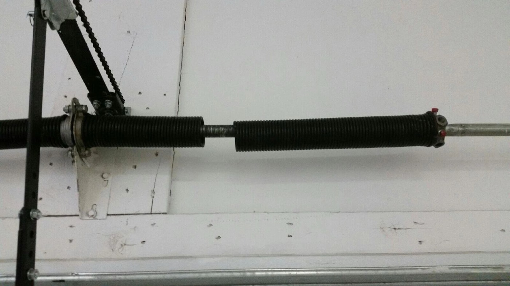
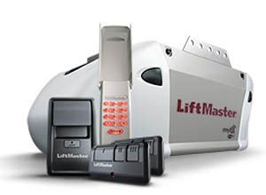

Fountain · Colorado Springs · Pueblo
Services & prices
Residential overhead garage doors: repairs, springs, new doors, openers and maintenance. We service all brands, and the inspection and estimate are free.
01 · Repair
Garage door repair
No other part of your home sees as much wear as your overhead garage door: the average residential door goes up and down more than a thousand times a year. Kept in good working order, it gives you convenience and security. Neglected, it can get as noisy as a locomotive and become a real safety risk. And Colorado weather, hail seasons included, gives garage doors a beating.
- Door suddenly stopped working? Sudden breakdowns are usually easier to fix because the problem is isolated. Check the remote batteries first.
- Door feels heavy? The springs are likely wearing out. A quick and affordable fix.
- One panel damaged? Have it checked quickly. Hidden damage to other panels is common, and once more than a couple of panels need replacing, a new door costs about the same.
- Sagging or uneven? Usually one worn spring or uneven cables. Re-balancing is a simple fix.

02 · Springs
Spring replacement
Residential springs typically last 7 to 9 years, but with most people using the garage as their front door they can wear out in as little as 4 to 6. Replacing a spring is dangerous work: an old or damaged spring can break and fly with full force.
Torsion springs
The most common type. Test: disengage the opener with the door closed, then raise the door halfway. It should stay put on its own. Heavy means the springs may be close to breaking; light can mean the wrong size. Expect 4 to 9 years of use.
Extension springs
Two springs along the ceiling tracks, always used with safety cables. Look for gaps in the coils, a door that sits uneven left to right, and wear on clips and loops.

03 · Replacement
Repair or replace?
Not sure what kind of door or opener you need? No problem. We discuss the options and give you a detailed estimate that best meets your needs. Signs it’s time for a new door:
- It hasn’t run properly for a while. Small issues repeated over hundreds of cycles cause damage that can’t be fixed.
- It’s severely damaged. Past a point, repairing portions costs more than a new door, especially after storm damage across several panels.
- It’s old. Newer doors bring curb appeal, better security features and better energy efficiency.
- You’ve had a break-in. If the door was the way in, a new door closes the weakness for good.

04 · Openers
Garage door openers
We service all makes and models and carry LiftMaster openers. Openers rarely fail without warning. Before anything else, detach the opener and check that the door runs smoothly and stays put halfway up. If it free-falls, the problem is the door, and it can damage the opener.
- Works only some of the time, or opens and then suddenly reverses
- Slow, hesitating, or the door detaches from the opener
- Loud rattling chains, groaning motor, visible vibration
- You want smart control, battery backup or key-less entry

We carry LiftMaster openers
05 · Maintenance
Annual service & inspection
Garage doors and openers have become so reliable that people forget them until they stop working. Doors should be serviced and inspected at least once a year to check that all components are balanced and working together, because safety systems can fall out of adjustment when the door goes out of balance or parts wear out. Preventative maintenance saves money and frustration by catching failing parts before they break.
Don’t know when your door was last serviced? Give us a call to schedule service and inspection, and ask about our annual maintenance service plans.
Prices
What does it cost to fix my door?
Typical prices as published by Million Garage Door Services. Every job starts with a free inspection and estimate.
Garage door service
Balance, tighten, lubricate, adjust track and settings
$89Door repair
Torsion springs, cables, rollers, hinges, support struts
$140 – $320averageGarage door openers
Repairs up to replacement, 7 ft / 8 ft doors
$175 – $420New garage door
Average 16 ft × 7 ft, non-insulated, installed
from $810FAQ
Frequently asked questions
Caution: worn or damaged overhead doors are very dangerous. We always recommend contacting a professional for inspection.
My garage door won’t close
In most cases the safety sensor eyes are misaligned. Wiggle the sensors and adjust until both lights are on and solid. Note: safety sensor eyes and circuit boards do fail and will also keep the door from closing.
My garage door sticks and won’t open
Doors that will not open fully are usually the result of broken springs. Do not touch or handle the springs: they are under extreme tension and can cause severe injury. Trying to open or close a door with a broken spring is dangerous and can damage the door and opener.
My garage door won’t fully open or close
Openers have limit settings and force settings that occasionally need adjusting. If limits or forces repeatedly need adjusting, there is an issue with the circuit board.
My opener runs but the door doesn’t move
First, check that the emergency release cord is engaged. If it is, it is usually a broken trolley, a broken motor coupler or a worn-out gear or sprocket.
My remote control doesn’t work
If all remotes stop working at the same time, it indicates a circuit board problem. If just one stops working, try a new battery first. Remotes do fail and you may need a new one.
My door is off track or crooked
A crooked door, or one that has thrown rollers out of the tracks, usually means a cable has slipped off the drum, so the springs lift the door unevenly. The spring tension must be relieved to reset the cable. Do not try to open or close the door: springs and cables are under extreme tension.